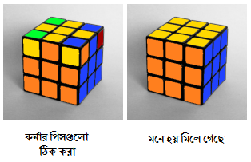

এটাই শেষ অংশ। আগের অংশটি ঠিকভাবে করতে পারলে দেখবেন এখানে উপরের লেয়ারের কর্নারগুলো ঠিক জায়গায় পাবেন। শুধুমাত্র তাদের ঠিকভাবে বসানো বাকি। এক্ষেত্রে আপনাকে যেকোনো একটা পাশকে (ফ্রন্ট ও বটম বাদে) স্থির ধরে নিতে হবে। শুধুমাত্র উপরের লেয়ার ঘুরিয়ে না-মেলা কর্নারগুলোকে চিত্রের মতো করে ডানপাশে-নিচে আনতে হবে। তারপর নিচের অ্যালগরিদমটি ক্ষেত্রবিশেষে ২ অথবা ৪ বার দিতে হবেঃ
R’ D’ R D
কিছু ক্ষেত্রে ২বার আবার কিছু ক্ষেত্রে ৪ বার দিলে কর্নারগুলো জায়গায় আসবে। সবগুলো কর্নার জায়গায় আসলে এবার উপরের লেয়ার ঘুরিয়ে শেষ পেরেকটি ঠুকে দিন।
